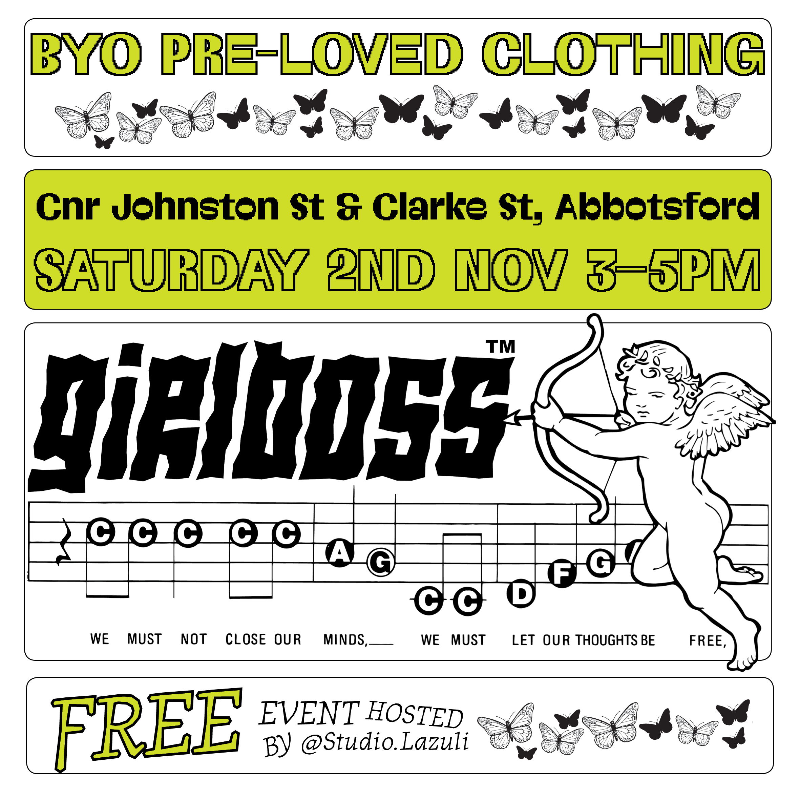
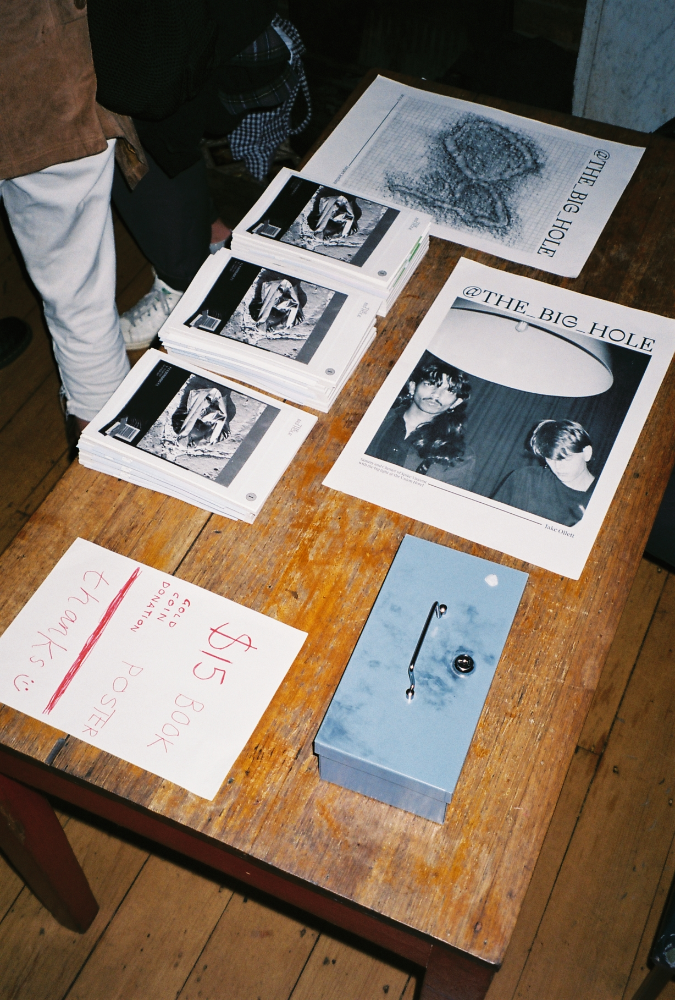
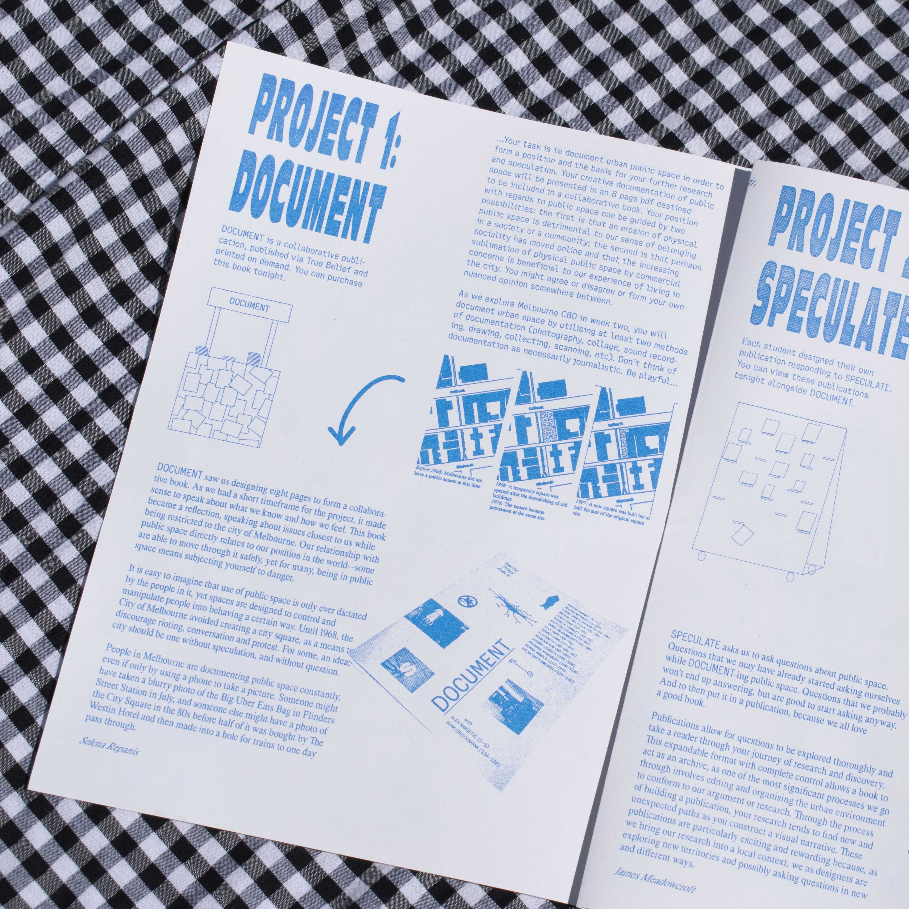

On November 2nd, I hosted a screenprinting workshop with Lazuli Studio. Participants brought along pre-loved clothing, and then customise them using graphics designed to subvert the “Girlboss” narrative popular in neoliberal feminism today. My practise asserts that neoliberal feminism reinforces consumerism — this workshop was intended to provide an opportunity for people to come together meaningfully, outside of that consumer context.

The Big Hole is an experimental project designed by myself and edited by Izzy Hardisty. The project aims to document and respond to "The Big Hole", the site formerly City Square. Since April 2017, the site has been closed off to the public, as construction of the new Town Hall Station, part of the Metro Tunnel, takes place. The first run of 200 copies of The Big Hole are all sold out.

An exhibition guide handed out for free @ the Monash University graduation show 2018, representing Making Things Public, a class run by Adam Cruickshank and Alex Margetic. Risograph printed flyer designed by myself, James Meadowcroft and Bridget Melville.

As part of Adam Cruickshank’s “Terms & Conditions” at MUMA’s Bookworks, I was asked to promote Rachel Schenberg’s contribution to the show. This flyer was designed, risograph printed, and distributed at MUMA in September '19.

A series of 7 posters unpacking Laboria Cuboniks' Xenofeminist Manifesto. A3 series of 7 individual posters, full manifesto on back. Risograph printed by General Enquiry.

We Never Close is a publication dedicated to 199 Queens Parade, Clifton Hill — both a 24-hour McDonalds, and a repurposed Art Deco heritage-listed building. This publication looks into the chaotic nature of 24-hour retail spaces, designer JH Wardrop’s contributions to Victorian architecture, but mostly an experiment looking into the reflexive nature of books themselves.